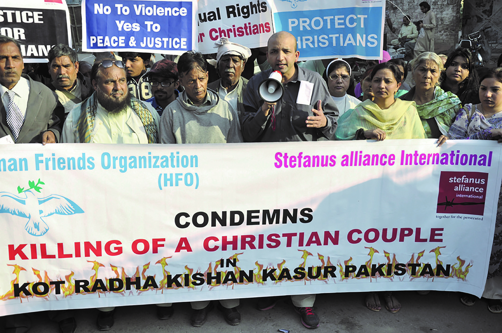
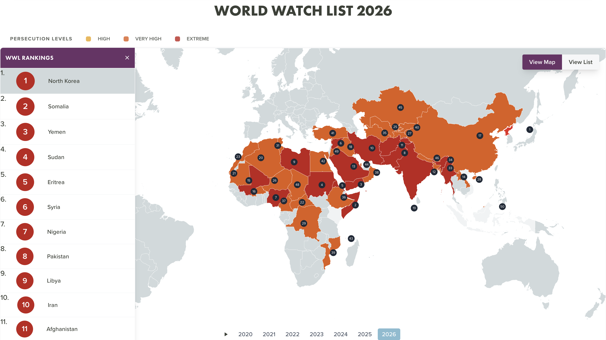
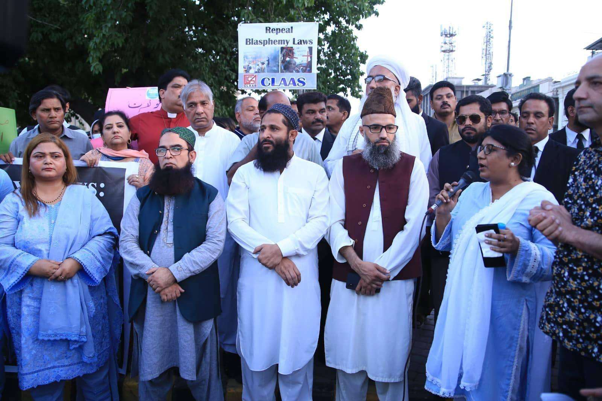
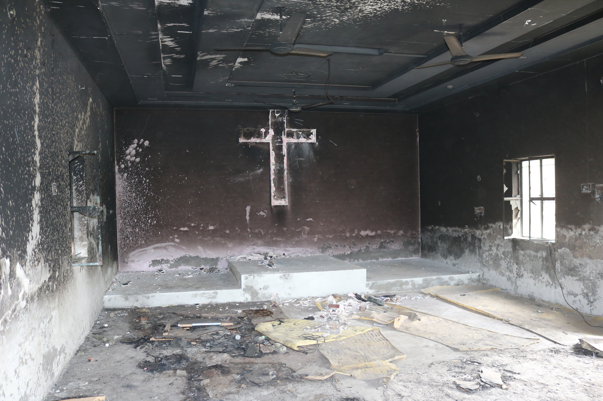

Årets aksjon

Årets prosjekt

Pakistan er et av verdens verste land å være religiøs minoritet i. Nær 97 % av innbyggerne er muslimer, og bare 3,6 % tilhører religiøse minoriteter. Folketellingen i 1998 talte 2,7 millioner kristne. Siden slutten av 1970-tallet har en økende islamisering av rettsvesen, skole og samfunnsliv rammet minoritetene hardt.
Blasfemilovene, som har dødsstraff for «spott av profeten», blir ofte misbrukt mot kristne. En anklage er nok til å sette liv og hjem i fare. I 2023 ble en kristen landsby i Jaranwala angrepet av en mobb, og over 25 kirker og 90 hus ble vandalisert eller brent.
Ofrene mister hjem og trygghet, og mange blir flyktninger i eget land. Selv slektninger tør ofte ikke ta dem inn, fordi de selv lever i fattigdom og frykter naboenes vrede. Uten fri rettshjelp får sakene deres aldri behandling i rettssystemet.
Siden 2014 har Stefanusalliansen støttet Human Friends Organization (HFO), grunnlagt av Sajid Christopher Paul. HFO gir rettshjelp, traumebehandling og hjelp til å finne nytt bosted og komme tilbake i arbeid. De dokumenterer også brudd på religionsfriheten og tar sakene med til myndighetene i Pakistan og til det internasjonale samfunnet. Du kan lese mer om Stefanusalliansen og Human Friends Organization her.
Hjelpen når langt, men behovet er langt større. Til dette ber vi om din støtte!
Kilder: Stefanusalliansen: Pakistan, Hjelp til ofre for blasfemilov og tvangskonvertering og Open Doors.


Ett av mange ansikter
Maria Bibi var 12 år da hun ble tvangsgiftet med en muslimsk mann. Faren kjempet for å få henne hjem igjen, men i mars slo Pakistans føderale forfatningsdomstol fast at ekteskapet er gyldig.
Dommerne trodde ikke på dokumentasjonen som viser hvor ung hun er. De mente at hun hadde konvertert til islam og dermed lovlig var under ektemannens omsorg. Sajid Christopher Paul i Human Friends Organization sier at domstolen overså Marias sårbarhet, og at avgjørelsen åpner for at flere jenter fra minoriteter kan bli tvangsgiftet.
Maria er ikke alene. FN-eksperter har advart mot et mønster der unge jenter fra minoriteter bortføres, tvangskonverteres og tvangsgiftes, og praksisen har økt de siste årene. HFO forbereder nå å ta Marias sak til Pakistans høyesterett.
Det er jenter som Maria årets Adventsaksjon handler om.